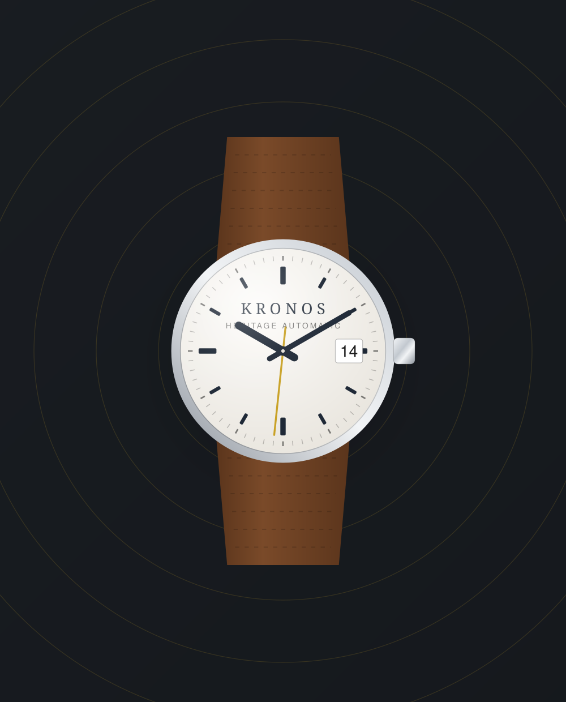

Jam yang menemani, bukan sekadar menghitung waktu.
Kronos merakit jam tangan dengan movement teruji, material yang jujur, dan proporsi yang nyaman dipakai seharian. Tiga puluh dua model, empat karakter, satu standar kualitas.
- 2 tahunGaransi resmi
- 32 modelSiap kirim
- 300 mKetahanan air tertinggi

Mulai dari karakter yang Anda cari
Empat keluarga produk dengan tujuan pemakaian yang berbeda. Pilih satu untuk langsung masuk ke koleksi yang sudah difilter.
Paling sering dibawa pulang
Enam model yang paling banyak dipesan enam bulan terakhir, lengkap dengan harga terkini.
Yang Anda dapat saat membeli di Kronos
-
Garansi resmi 2 tahun
Kartu garansi bernomor untuk movement dan perakitan, berlaku di seluruh Indonesia.
-
Gratis ongkir se-Indonesia
Dikemas dengan busa ganda dan diasuransikan penuh sampai di tangan Anda.
-
Tahan air 30–300 meter
Setiap unit diuji tekanan sebelum dikirim, bukan sekadar mengikuti angka di katalog.
-
Servis purna jual
Ganti baterai, poles case, dan penyetelan strap di bengkel kami di Surabaya.